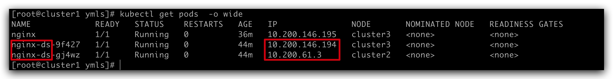
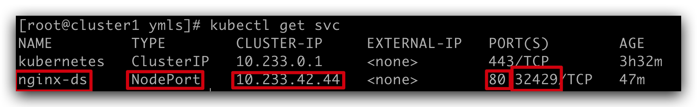

服务器说明
- Kubernets Version
- v1.22.15
- 节点要求
- 节点数 >= 3台
- CPUs >= 2
- Memory >= 2G
- 修改时区 有的系统时区不匹配，需要修改
- 环境说明
| 系统类型 | IP地址 | 节点角色 | CPU | Memory | Hostname |
|---|---|---|---|---|---|
| CentOS-7.9 | 192.168.200.11 | master | >=2 | >=2G | cluster1 |
| CentOS-7.9 | 192.168.200.22 | master,worker | >=2 | >=2G | custer2 |
| CentOS-7.9 | 192.168.200.33 | worker | >=2 | >=2G | cluster3 |
- 使用
Vagrant搭建虚拟机节点
- Vagrant: latest
- VirtualBox: 7.0
- vagrant-vbguest: 0.21 (挂载
host和guest同步目录)
Vagrantfile配置文件如下:
# -*- mode: ruby -*-
# vi: set ft=ruby :
nodes = [
{
:name => "cluster1",
:eth1 => "192.168.200.11",
:mem => "4096",
:cpu => "2"
},
{
:name => "cluster2",
:eth1 => "192.168.200.22",
:mem => "4096",
:cpu => "2"
},
{
:name => "cluster3",
:eth1 => "192.168.200.33",
:mem => "4096",
:cpu => "2"
},
]
Vagrant.configure("2") do |config|
# Every Vagrant development environment requires a box.
config.vm.box = "centos/7"
nodes.each do |opts|
config.vm.define opts[:name] do |config|
config.vm.hostname = opts[:name]
config.vm.provider "virtualbox" do |v|
v.customize ["modifyvm", :id, "--memory", opts[:mem]]
v.customize ["modifyvm", :id, "--cpus", opts[:cpu]]
end
#config.ssh.username = "root"
#config.ssh.private_key_path = "/Users/jinpeng.d/.ssh/id_rsa"
config.vm.synced_folder "../share", "/vagrant_data"
config.vm.network :public_network, ip: opts[:eth1]
config.vm.synced_folder "../share", "/vagrant_data"
end
end
end系统设置(所有节点)
- 所有操作需要
root权限 - hostname (/etc/hosts)
- 安装依赖包
yum update -y
yum install -y socat conntrack ipvsadm ipset jq sysstat curl iptables libseccomp yum-utils- 关闭防火墙,selinux, swap,重置 iptables
# 1. 关闭selinux
setenforce 0
sed -i '/SELINUX/s/enforcing/disabled/' /etc/selinux/config
# 2. 关闭防火墙
systemctl stop firewalld && systemctl disable firewalld
# 3. 设置ipttables规则
iptables -F && iptables -X && iptables -F -t nat && iptables -X -t nat && iptables -P FORWARD ACCEPT
# 4. 关闭swap
vi /etc/fstab
# 永久禁用注释掉swap
#/swapfile none swap defaults 0 0
# 临时禁用
swapoff -a
# 这里两者都用，临时修改可以即时生效，不用重启，永久禁用防止重启后不生效
# 5. 关闭dnsmasq(否则无法解析域名)
service dnsmasq stop && systemctl disable dnsmasq- kubernetes参数设置
cat > /etc/sysctl.d/kubernetes.conf <<EOF
net.bridge.bridge-nf-call-ip6tables = 1
net.bridge.bridge-nf-call-iptables = 1
net.ipv4.ip_nonlocal_bind = 1
net.ipv4.ip_forward = 1
vm.swappiness = 0
vm.overcommit_memory = 1
EOF
# 生效文件
sysctl -p /etc/sysctl.d/kubernetes.conf- 配置免密登录 选择其中一个节点，或者一个单独的机器生成ssh公秘钥对，把公钥放在k8s所有节点服务器上
# 生成公秘钥对, 如果没有可用的
ssh-keygen -t rsa
# 查看公钥内容
cat ~/.ssh/id_rsa.pub
# 每一台节点机器上配置
echo "<pubkey content>" >> ~/.ssh/authorized_keys- 配置IP映射(每个节点)
- 下载k8s组件包
export VERSION=v1.22.15
# 下载master节点组件
wget https://storage.googleapis.com/kubernetes-release/release/${VERSION}/bin/linux/amd64/kube-apiserver
wget https://storage.googleapis.com/kubernetes-release/release/${VERSION}/bin/linux/amd64/kube-controller-manager
wget https://storage.googleapis.com/kubernetes-release/release/${VERSION}/bin/linux/amd64/kube-scheduler
wget https://storage.googleapis.com/kubernetes-release/release/${VERSION}/bin/linux/amd64/kubectl
# 下载worker节点组件
wget https://storage.googleapis.com/kubernetes-release/release/${VERSION}/bin/linux/amd64/kube-proxy
wget https://storage.googleapis.com/kubernetes-release/release/${VERSION}/bin/linux/amd64/kubelet
# 下载etcd组件
wget https://github.com/etcd-io/etcd/releases/download/v3.4.10/etcd-v3.4.10-linux-amd64.tar.gz
tar -xvf etcd-v3.4.10-linux-amd64.tar.gz
mv etcd-v3.4.10-linux-amd64/etcd* .
rm -fr etcd-v3.4.10-linux-amd64*- 分发软件包
# 把master相关组件分发到master节点
MASTERS=(cluster1 cluster2)
for instance in ${MASTERS[@]}; do
scp kube-apiserver kube-controller-manager kube-scheduler kubectl root@${instance}:/usr/local/bin/
done
# 把worker先关组件分发到worker节点
WORKERS=(cluster2 cluster3)
for instance in ${WORKERS[@]}; do
scp kubelet kube-proxy root@${instance}:/usr/local/bin/
done
# 把etcd组件分发到etcd节点
ETCDS=(cluster1 cluster2 cluster3)
for instance in ${ETCDS[@]}; do
scp etcd etcdctl root@${instance}:/usr/local/bin/
done生成证书
- 准备工作
安装
cfsslkubernetes集群组件
- 服务端组件:
kube-apiserverkube-controller-managerkube-schedulerkubectlcontainer runtime(containerd)
- 客户端组件:
kubeletkube-proxycontainer runtime(containerd)
- 服务端组件:
- 生成根证书 根证书是集群所有节点共享的，只要创建一个CA证书，后续创建的所有证书都由它签名。 在可以登录到所有节点的控制台机器上创建
pki目录存放证书
根证书配置文件创建
cat > ca-config.json <<EOF { "signing": { "default": { "expiry": "876000h" }, "profiles": { "kubernetes": { "usages": ["signing", "key encipherment", "server auth", "client auth"], "expiry": "876000h" } } } } EOF cat > ca-csr.json <<EOF { "CN": "Kubernetes", "key": { "algo": "rsa", "size": 2048 }, "names": [ { "C": "US", "L": "Portland", "O": "Kubernetes", "OU": "CA", "ST": "Oregon" } ] } EOF生成证书和密钥
生成证书和私钥, ca.pem是证书, ca-key.pem是证书私钥 bash cfssl gencert -initca ca-csr.json | cfssljson -bare ca 输出文件:
- ca.pem
- ca.csr
- ca-key.pem
admin客户端证书
admin客户端证书配置文件
生成
admin客户端证书和私钥(基于根证书和私钥以及证书配置文件)cfssl gencert \ -ca=ca.pem \ -ca-key=ca-key.pem \ -config=ca-config.json \ -profile=kubernetes \ admin-csr.json | cfssljson -bare admin输出文件:
- admin.csr
- admin.pem
- admin-key.pem
kubelet客户端证书kubernetes使用一种称为Node Authorizer的专用授权模式来授权kubernetes发出的API请求。kubelet使用将其标识为system:nodes组中的凭据,其用户名为system: node:nodeName, 接下来给每个Worker节点生成证书。
生成
kubelet客户端证书配置文件- 设置Worker节点列表
WORKERS=(cluster2 cluster3) WORKER_IPS=(192.168.200.22 192.168.200.33) for ((i=0;i<${#WORKERS[@]};i++)); do cat > ${WORKERS[$i]}-csr.json <<EOF { "CN": "system:node:${WORKERS[$i]}", "key": { "algo": "rsa", "size": 2048 }, "names": [ { "C": "CN", "L": "Beijing", "O": "system:nodes", "OU": "seven", "ST": "Beijing" } ] } EOF done生成
kubelet客户端证书和密钥for ((i=0;i<${#WORKERS[@]};i++)); do cfssl gencert \ -ca=ca.pem \ -ca-key=ca-key.pem \ -config=ca-config.json \ -hostname=${WORKERS[$i]},${WORKER_IPS[$i]} \ -profile=kubernetes \ ${WORKERS[$i]}-csr.json | cfssljson -bare ${WORKERS[$i]} done输出文件:
- {worker-node-name}.csr
- {worker-node-name}.pem
- {worker-node-name}-key.pem
kube-controller-manager客户端证书
kube-controller-manager客户端证书配置文件
cat > kube-controller-manager-csr.json <<EOF
{
"CN": "system:kube-controller-manager",
"key": {
"algo": "rsa",
"size": 2048
},
"names": [
{
"C": "CN",
"ST": "BeiJing",
"L": "BeiJing",
"O": "system:kube-controller-manager",
"OU": "seven"
}
]
}
EOF- 生成
kube-controller-manager客户端证书
cfssl gencert \
-ca=ca.pem \
-ca-key=ca-key.pem \
-config=ca-config.json \
-profile=kubernetes \
kube-controller-manager-csr.json | cfssljson -bare kube-controller-manager输出文件: + kube-controller-manager.csr + kube-controller-manager.pem + kube-controller-manager-key.pem
kube-proxy客户端证书
kube-proxy客户端证书配置文件生成
kube-proxy客户端证书cfssl gencert \ -ca=ca.pem \ -ca-key=ca-key.pem \ -config=ca-config.json \ -profile=kubernetes \ kube-proxy-csr.json | cfssljson -bare kube-proxy输出文件:
- kube-proxy.csr
- kube-proxy.pem
- kube-proxy-key.pem
kube-scheduler客户端证书
kube-scheduler客户端证书配置生成
kube-scheduler客户端证书cfssl gencert \ -ca=ca.pem \ -ca-key=ca-key.pem \ -config=ca-config.json \ -profile=kubernetes \ kube-scheduler-csr.json | cfssljson -bare kube-scheduler输出文件:
- kube-scheduler.csr
- kube-scheduler.pem
- kube-scheduler-key.pem
kube-apiserver服务端证书
kube-apiserver服务端证书配置生成
kube-apiserver服务端证书 服务端证书与客户端证书不同:- 客户端证书需要通过一个名字或者IP去访问服务端，所以证书需要包含客户端所访问的名字或IP，用以客户端验证
- 指定可能作为master的节点服务地址
- apiserver的 service ip地址(一般是svc网段的第一个ip)
- 所有master内网IP和公网IP，逗号分割，(可以把所有节点写上，防止变换master节点)
KUBERNETES_SVC_IP="10.233.0.1" MASTER_IPS="192.168.200.11,192.168.200.22,192.168.200.33" cfssl gencert \ -ca=ca.pem \ -ca-key=ca-key.pem \ -config=ca-config.json \ -hostname=${KUBERNETES_SVC_IP},${MASTER_IPS},127.0.0.1,kubernetes,kubernetes.default,kubernetes.default.svc,kubernetes.default.svc.cluster,kubernetes.svc.cluster.local \ -profile=kubernetes \ kubernetes-csr.json | cfssljson -bare kubernetes输出文件:
- kubernetes.csr
- kubernetes.pem
- kubernetes-key.pem
Service Account证书
配置文件
生成证书
cfssl gencert \ -ca=ca.pem \ -ca-key=ca-key.pem \ -config=ca-config.json \ -profile=kubernetes \ service-account-csr.json | cfssljson -bare service-account输出文件:
- service-account.csr
- service-account.pem
- service-account-key.pem
proxy-client证书
配置文件
生成证书
cfssl gencert \ -ca=ca.pem \ -ca-key=ca-key.pem \ -config=ca-config.json \ -profile=kubernetes \ proxy-client-csr.json | cfssljson -bare proxy-client输出文件:
- proxy-client.csr
- proxy-client.pem
- proxy-client-key.pem
- 分发客户端，服务端证书
- 分发
Worker节点需要的证书和私钥- 每个Worker节点证书和密钥
- 分发
Master节点需要的证书和私钥- 根证书和密钥(ca*.pem)
kube-apiserver证书和密钥(kubenetes*.pem)service-account证书和密钥(service-account*.pem)proxy-client证书和密钥(proxy-client*.pem)
kubernetes各组件的认证配置
kubernetes的认证配置文件，称为kubeconfigs，用于让kubernetes的客户端定位 kube-apiserver并通过apiserver的安全认证。
- controller-manager
- kubelet
- kube-proxy
- scheduler
- admin user
- 为
kubelet生成kubeconfigs(每个Worker节点)
WORKERS=("cluster2" "cluster3")
for instance in ${WORKERS[@]}; do
kubectl config set-cluster kubernetes \
--certificate-authority=ca.pem \
--embed-certs=true \
--server=https://127.0.0.1:6443 \
--kubeconfig=${instance}.kubeconfig
kubectl config set-credentials system:node:${instance} \
--client-certificate=${instance}.pem \
--client-key=${instance}-key.pem \
--embed-certs=true \
--kubeconfig=${instance}.kubeconfig
kubectl config set-context default \
--cluster=kubernetes \
--user=system:node:${instance} \
--kubeconfig=${instance}.kubeconfig
kubectl config use-context default --kubeconfig=${instance}.kubeconfig
done- 为
kube-proxy生成kubeconfigs
kubectl config set-cluster kubernetes \
--certificate-authority=ca.pem \
--embed-certs=true \
--server=https://127.0.0.1:6443 \
--kubeconfig=kube-proxy.kubeconfig
kubectl config set-credentials system:kube-proxy \
--client-certificate=kube-proxy.pem \
--client-key=kube-proxy-key.pem \
--embed-certs=true \
--kubeconfig=kube-proxy.kubeconfig
kubectl config set-context default \
--cluster=kubernetes \
--user=system:kube-proxy \
--kubeconfig=kube-proxy.kubeconfig
kubectl config use-context default --kubeconfig=kube-proxy.kubeconfig- 为
kube-controller-manager生成kubeconfigs
kubectl config set-cluster kubernetes \
--certificate-authority=ca.pem \
--embed-certs=true \
--server=https://127.0.0.1:6443 \
--kubeconfig=kube-controller-manager.kubeconfig
kubectl config set-credentials system:kube-controller-manager \
--client-certificate=kube-controller-manager.pem \
--client-key=kube-controller-manager-key.pem \
--embed-certs=true \
--kubeconfig=kube-controller-manager.kubeconfig
kubectl config set-context default \
--cluster=kubernetes \
--user=system:kube-controller-manager \
--kubeconfig=kube-controller-manager.kubeconfig
kubectl config use-context default --kubeconfig=kube-controller-manager.kubeconfig- 为
kube-scheduler生成kubeconfigs
kubectl config set-cluster kubernetes \
--certificate-authority=ca.pem \
--embed-certs=true \
--server=https://127.0.0.1:6443 \
--kubeconfig=kube-scheduler.kubeconfig
kubectl config set-credentials system:kube-scheduler \
--client-certificate=kube-scheduler.pem \
--client-key=kube-scheduler-key.pem \
--embed-certs=true \
--kubeconfig=kube-scheduler.kubeconfig
kubectl config set-context default \
--cluster=kubernetes \
--user=system:kube-scheduler \
--kubeconfig=kube-scheduler.kubeconfig
kubectl config use-context default --kubeconfig=kube-scheduler.kubeconfig- 为
admin用户生成kubeconfigs
kubectl config set-cluster kubernetes \
--certificate-authority=ca.pem \
--embed-certs=true \
--server=https://127.0.0.1:6443 \
--kubeconfig=admin.kubeconfig
kubectl config set-credentials admin \
--client-certificate=admin.pem \
--client-key=admin-key.pem \
--embed-certs=true \
--kubeconfig=admin.kubeconfig
kubectl config set-context default \
--cluster=kubernetes \
--user=admin \
--kubeconfig=admin.kubeconfig
kubectl config use-context default --kubeconfig=admin.kubeconfig- 分发
kubeconfigs配置文件
kubelet和kube-proxy的kubeconfigs分发到Worker节点
WORKERS=("cluster2" "cluster3")
for instance in ${WORKERS[@]}; do
scp ${instance}.kubeconfig kube-proxy.kubeconfig ${instance}:~/
donekube-controller-manager和kube-scheduler的kubeconfigs分发到Master节点
部署ETCD集群
- 配置
etcd证书文件
mkdir -p /etc/etcd /var/lib/etcd
chmod 700 /var/lib/etcd
cp ca.pem kubernetes-key.pem kubernetes.pem /etc/etcd/- 配置
etcd.service文件
- ECCD_IP: 为当前ectd存储服务器的IP
ETCD_NAME=$(hostname -s)
ETCD_IP=192.168.200.11
ETCD_NAMES=(cluster1 cluster2 cluster3)
ETCD_IPS=(192.168.200.11 192.168.200.22 192.168.200.33)
cat <<EOF > /etc/systemd/system/etcd.service
[Unit]
Description=etcd
Documentation=https://github.com/coreos
[Service]
Type=notify
ExecStart=/usr/local/bin/etcd \\
--name ${ETCD_NAME} \\
--cert-file=/etc/etcd/kubernetes.pem \\
--key-file=/etc/etcd/kubernetes-key.pem \\
--peer-cert-file=/etc/etcd/kubernetes.pem \\
--peer-key-file=/etc/etcd/kubernetes-key.pem \\
--trusted-ca-file=/etc/etcd/ca.pem \\
--peer-trusted-ca-file=/etc/etcd/ca.pem \\
--peer-client-cert-auth \\
--client-cert-auth \\
--initial-advertise-peer-urls https://${ETCD_IP}:2380 \\
--listen-peer-urls https://${ETCD_IP}:2380 \\
--listen-client-urls https://${ETCD_IP}:2379,https://127.0.0.1:2379 \\
--advertise-client-urls https://${ETCD_IP}:2379 \\
--initial-cluster-token etcd-cluster-0 \\
--initial-cluster ${ETCD_NAMES[0]}=https://${ETCD_IPS[0]}:2380,${ETCD_NAMES[1]}=https://${ETCD_IPS[1]}:2380,${ETCD_NAMES[2]}=https://${ETCD_IPS[2]}:2380 \\
--initial-cluster-state new \\
--data-dir=/var/lib/etcd
Restart=on-failure
RestartSec=5
[Install]
WantedBy=multi-user.target
EOF- 启动
etcd集群
- 验证
etcd集群
ETCDCTL_API=3 etcdctl member list \
--endpoints=https://127.0.0.1:2379 \
--cacert=/etc/etcd/ca.pem \
--cert=/etc/etcd/kubernetes.pem \
--key=/etc/etcd/kubernetes-key.pem成功输出结果如下(不同机器不同):
87db4208f2c1d75, started, cluster2, https://192.168.200.22:2380, https://192.168.200.22:2379, false
95c5677668e390bf, started, cluster1, https://192.168.200.11:2380, https://192.168.200.11:2379, false
d728cb204dcd87a3, started, cluster3, https://192.168.200.33:2380, https://192.168.200.33:2379, false部署kubernetes控制面板
每个组件有多个点保证高可用。 我们在cluster1和cluster2上部署kube-apiserver,kube-contronller-manager,kube-scheduler
- 配置
API Server(每个master节点都需要配置)
mkdir -p /etc/kubernetes/ssl
mv ca.pem ca-key.pem kubernetes-key.pem kubernetes.pem \
service-account-key.pem service-account.pem \
proxy-client.pem proxy-client-key.pem \
/etc/kubernetes/ssl
IP=192.168.200.11
APISERVER_COUNT=2
ETCD_ENDPOINTS=(192.168.200.11 192.168.200.22 192.168.200.33)
cat <<EOF > /etc/systemd/system/kube-apiserver.service
[Unit]
Description=Kubernetes API Server
Documentation=https://github.com/kubernetes/kubernetes
[Service]
ExecStart=/usr/local/bin/kube-apiserver \\
--advertise-address=${IP} \\
--allow-privileged=true \\
--apiserver-count=${APISERVER_COUNT} \\
--audit-log-maxage=30 \\
--audit-log-maxbackup=3 \\
--audit-log-maxsize=100 \\
--audit-log-path=/var/log/audit.log \\
--authorization-mode=Node,RBAC \\
--bind-address=0.0.0.0 \\
--client-ca-file=/etc/kubernetes/ssl/ca.pem \\
--enable-admission-plugins=NamespaceLifecycle,NodeRestriction,LimitRanger,ServiceAccount,DefaultStorageClass,ResourceQuota \\
--etcd-cafile=/etc/kubernetes/ssl/ca.pem \\
--etcd-certfile=/etc/kubernetes/ssl/kubernetes.pem \\
--etcd-keyfile=/etc/kubernetes/ssl/kubernetes-key.pem \\
--etcd-servers=https://${ETCD_ENDPOINTS[0]}:2379,https://${ETCD_ENDPOINTS[1]}:2379,https://${ETCD_ENDPOINTS[2]}:2379 \\
--event-ttl=1h \\
--kubelet-certificate-authority=/etc/kubernetes/ssl/ca.pem \\
--kubelet-client-certificate=/etc/kubernetes/ssl/kubernetes.pem \\
--kubelet-client-key=/etc/kubernetes/ssl/kubernetes-key.pem \\
--service-account-issuer=api \\
--service-account-key-file=/etc/kubernetes/ssl/service-account.pem \\
--service-account-signing-key-file=/etc/kubernetes/ssl/service-account-key.pem \\
--api-audiences=api,vault,factors \\
--service-cluster-ip-range=10.233.0.0/16 \\
--service-node-port-range=30000-32767 \\
--proxy-client-cert-file=/etc/kubernetes/ssl/proxy-client.pem \\
--proxy-client-key-file=/etc/kubernetes/ssl/proxy-client-key.pem \\
--runtime-config=api/all=true \\
--requestheader-client-ca-file=/etc/kubernetes/ssl/ca.pem \\
--requestheader-allowed-names=aggregator \\
--requestheader-extra-headers-prefix=X-Remote-Extra- \\
--requestheader-group-headers=X-Remote-Group \\
--requestheader-username-headers=X-Remote-User \\
--tls-cert-file=/etc/kubernetes/ssl/kubernetes.pem \\
--tls-private-key-file=/etc/kubernetes/ssl/kubernetes-key.pem \\
--v=1
Restart=on-failure
RestartSec=5
[Install]
WantedBy=multi-user.target
EOF- 配置
kube-controller-manager
mv kube-controller-manager.kubeconfig /etc/kubernetes/
cat <<EOF > /etc/systemd/system/kube-controller-manager.service
[Unit]
Description=Kubernetes Controller Manager
Documentation=https://github.com/kubernetes/kubernetes
[Service]
ExecStart=/usr/local/bin/kube-controller-manager \\
--bind-address=0.0.0.0 \\
--cluster-cidr=10.200.0.0/16 \\
--cluster-name=kubernetes \\
--cluster-signing-cert-file=/etc/kubernetes/ssl/ca.pem \\
--cluster-signing-key-file=/etc/kubernetes/ssl/ca-key.pem \\
--cluster-signing-duration=876000h0m0s \\
--kubeconfig=/etc/kubernetes/kube-controller-manager.kubeconfig \\
--leader-elect=true \\
--root-ca-file=/etc/kubernetes/ssl/ca.pem \\
--service-account-private-key-file=/etc/kubernetes/ssl/service-account-key.pem \\
--service-cluster-ip-range=10.233.0.0/16 \\
--use-service-account-credentials=true \\
--v=1
Restart=on-failure
RestartSec=5
[Install]
WantedBy=multi-user.target
EOF- 配置
kube-scheduler
mv kube-scheduler.kubeconfig /etc/kubernetes
cat <<EOF > /etc/systemd/system/kube-scheduler.service
[Unit]
Description=Kubernetes Scheduler
Documentation=https://github.com/kubernetes/kubernetes
[Service]
ExecStart=/usr/local/bin/kube-scheduler \\
--authentication-kubeconfig=/etc/kubernetes/kube-scheduler.kubeconfig \\
--authorization-kubeconfig=/etc/kubernetes/kube-scheduler.kubeconfig \\
--kubeconfig=/etc/kubernetes/kube-scheduler.kubeconfig \\
--leader-elect=true \\
--bind-address=0.0.0.0 \\
--port=0 \\
--v=1
Restart=on-failure
RestartSec=5
[Install]
WantedBy=multi-user.target
EOF- 启动服务
systemctl daemon-reload
systemctl enable kube-apiserver
systemctl enable kube-controller-manager
systemctl enable kube-scheduler
systemctl start kube-apiserver
systemctl start kube-controller-manager
systemctl start kube-scheduler- 服务验证
正常输出如下:
tcp 0 0 0.0.0.0:22 0.0.0.0:* LISTEN 18829/sshd
tcp 0 0 127.0.0.1:25 0.0.0.0:* LISTEN 853/master
tcp 0 0 192.168.200.11:2379 0.0.0.0:* LISTEN 30516/etcd
tcp 0 0 127.0.0.1:2379 0.0.0.0:* LISTEN 30516/etcd
tcp 0 0 192.168.200.11:2380 0.0.0.0:* LISTEN 30516/etcd
tcp6 0 0 ::1:25 :::* LISTEN 853/master
tcp6 0 0 :::6443 :::* LISTEN 30651/kube-apiserve
tcp6 0 0 :::10257 :::* LISTEN 30666/kube-controll
tcp6 0 0 :::10259 :::* LISTEN 30679/kube-schedule- 配置
kubectlkubectl用来管理kubernetes集群的客户端工具。
授权apiserver调用kubelet API,在执行kubectl exec/run/logs时apiserver会转发到kubelet
Deploy kubernetes Worker Node
每个节点上都会部署:
- kubelet
- kube-proxy
- container runtime
- cni
- nginx-proxy
- Container Runtine(containerd)
VERSION=1.4.3
wget https://github.com/containerd/containerd/releases/download/v${VERSION}/cri-containerd-cni-${VERSION}-linux-amd64.tar.gz
tar -xvf cri-containerd-cni-${VERSION}-linux-amd64.tar.gz
cp etc/crictl.yaml /etc/
cp etc/systemd/system/containerd.service /etc/systemd/system/
cp -r usr /containerd配置文件
mkdir -p /etc/containerd
containerd config default > /etc/containerd/config.toml
# Options
vi /etc/containerd/config.toml- 启动
containerd
- 配置
kubelet
- 准备配置文件
mkdir -p /etc/kubernetes/ssl/
mv ${HOSTNAME}-key.pem ${HOSTNAME}.pem ca.pem ca-key.pem /etc/kubernetes/ssl/
mv ${HOSTNAME}.kubeconfig /etc/kubernetes/kubeconfig
IP=192.168.200.22
cat <<EOF > /etc/kubernetes/kubelet-config.yaml
kind: KubeletConfiguration
apiVersion: kubelet.config.k8s.io/v1beta1
authentication:
anonymous:
enabled: false
webhook:
enabled: true
x509:
clientCAFile: "/etc/kubernetes/ssl/ca.pem"
authorization:
mode: Webhook
clusterDomain: "cluster.local"
clusterDNS:
- "169.254.25.10"
podCIDR: "10.200.0.0/16"
address: ${IP}
readOnlyPort: 0
staticPodPath: /etc/kubernetes/manifests
healthzPort: 10248
healthzBindAddress: 127.0.0.1
kubeletCgroups: /systemd/system.slice
resolvConf: "/etc/resolv.conf"
runtimeRequestTimeout: "15m"
kubeReserved:
cpu: 200m
memory: 512M
tlsCertFile: "/etc/kubernetes/ssl/${HOSTNAME}.pem"
tlsPrivateKeyFile: "/etc/kubernetes/ssl/${HOSTNAME}-key.pem"
EOF- 配置服务
cat <<EOF > /etc/systemd/system/kubelet.service
[Unit]
Description=Kubernetes Kubelet
Documentation=https://github.com/kubernetes/kubernetes
After=containerd.service
Requires=containerd.service
[Service]
ExecStart=/usr/local/bin/kubelet \\
--config=/etc/kubernetes/kubelet-config.yaml \\
--container-runtime=remote \\
--container-runtime-endpoint=unix:///var/run/containerd/containerd.sock \\
--image-pull-progress-deadline=2m \\
--kubeconfig=/etc/kubernetes/kubeconfig \\
--network-plugin=cni \\
--node-ip=${IP} \\
--register-node=true \\
--v=2
Restart=on-failure
RestartSec=5
[Install]
WantedBy=multi-user.target
EOF- 配置
nginx-proxynginx-proxy是有一个用于Worker节点访问apiserver的一个代理， 是apiserver一个优雅的高可用方案。 它使用kubelet的staticpod方式启动，让每个节点都可以均衡的访问每个apiserver服务 优雅的替代了通过虚拟ip访问apiserver的方式。
只需要在没有``apiserver的节点部署
注意stream中有几个节点写几个
mkdir -p /etc/nginx
MASTER_IPS=(10.155.19.223 10.155.19.64)
cat <<EOF > /etc/nginx/nginx.conf
error_log stderr notice;
worker_processes 2;
worker_rlimit_nofile 130048;
worker_shutdown_timeout 10s;
events {
multi_accept on;
use epoll;
worker_connections 16384;
}
stream {
upstream kube_apiserver {
least_conn;
server ${MASTER_IPS[0]}:6443;
server ${MASTER_IPS[1]}:6443;
...
server ${MASTER_IPS[N]}:6443;
}
server {
listen 127.0.0.1:6443;
proxy_pass kube_apiserver;
proxy_timeout 10m;
proxy_connect_timeout 1s;
}
}
http {
aio threads;
aio_write on;
tcp_nopush on;
tcp_nodelay on;
keepalive_timeout 5m;
keepalive_requests 100;
reset_timedout_connection on;
server_tokens off;
autoindex off;
server {
listen 8081;
location /healthz {
access_log off;
return 200;
}
location /stub_status {
stub_status on;
access_log off;
}
}
}
EOF- Nginx manifest
cat <<EOF > /etc/kubernetes/manifests/nginx-proxy.yaml
apiVersion: v1
kind: Pod
metadata:
name: nginx-proxy
namespace: kube-system
labels:
addonmanager.kubernetes.io/mode: Reconcile
k8s-app: kube-nginx
spec:
hostNetwork: true
dnsPolicy: ClusterFirstWithHostNet
nodeSelector:
kubernetes.io/os: linux
priorityClassName: system-node-critical
containers:
- name: nginx-proxy
image: docker.io/library/nginx:1.19
imagePullPolicy: IfNotPresent
resources:
requests:
cpu: 25m
memory: 32M
securityContext:
privileged: true
livenessProbe:
httpGet:
path: /healthz
port: 8081
readinessProbe:
httpGet:
path: /healthz
port: 8081
volumeMounts:
- mountPath: /etc/nginx
name: etc-nginx
readOnly: true
volumes:
- name: etc-nginx
hostPath:
path: /etc/nginx
EOF- 配置
kube-proxy
- 配置文件
mv kube-proxy.kubeconfig /etc/kubernetes/
cat <<EOF > /etc/kubernetes/kube-proxy-config.yaml
apiVersion: kubeproxy.config.k8s.io/v1alpha1
kind: KubeProxyConfiguration
bindAddress: 0.0.0.0
clientConnection:
kubeconfig: "/etc/kubernetes/kube-proxy.kubeconfig"
clusterCIDR: "10.200.0.0/16"
mode: ipvs
EOFkube-proxy服务文件
cat <<EOF > /etc/systemd/system/kube-proxy.service
[Unit]
Description=Kubernetes Kube Proxy
Documentation=https://github.com/kubernetes/kubernetes
[Service]
ExecStart=/usr/local/bin/kube-proxy \\
--config=/etc/kubernetes/kube-proxy-config.yaml
Restart=on-failure
RestartSec=5
[Install]
WantedBy=multi-user.target
EOF- 服务启动
systemctl daemon-reload
systemctl enable kubelet kube-proxy
systemctl start kubelet kube-proxy
journalctl -f -u kubelet
journalctl -f -u kube-proxy- 手动下载镜像
pause(服务器无法访问外网) 在每个节点下载(master节点不下载可能不能成功)
crictl pull registry.cn-hangzhou.aliyuncs.com/kubernetes-kubespray/pause:3.2
ctr -n k8s.io i tag registry.cn-hangzhou.aliyuncs.com/kubernetes-kubespray/pause:3.2 k8s.gcr.io/pause:3.2- 主动拉取
/etc/kubernetes/manifests/nginx-proxy.yaml文件中的nginx镜像 具体版本，查看文件中的版本信息
网络插件Calico
- YAML文件需要从官网下载
- 链接: https://docs.projectcalico.org/getting-started/kubernetes/self-managed-onprem/onpremises
- 有两种配置，50节点以内或者以上
- 具体版本看官网信息，一下链接可能版本会不同
- 修改IP自动发现方式
- autodetect 可能会有问题
- 当kubelet的启动参数中存在–node-ip的时候，以host-network模式启动的pod的status.hostIP字段就会自动填入kubelet中指定的ip地址
修改前:
修改后:
- 修改CIDR
修改前:
修改后:
- 启动
calico
DNS插件CoreDNS
- Deploy CoreDNS
- 设置
coredns的cluster-ip - 下载
coredns.yaml - 替换
cluster-ip - 创建
coredns
---
apiVersion: v1
kind: ConfigMap
metadata:
name: coredns
namespace: kube-system
labels:
addonmanager.kubernetes.io/mode: EnsureExists
data:
Corefile: |
.:53 {
errors
health {
lameduck 5s
}
ready
kubernetes cluster.local in-addr.arpa ip6.arpa {
pods insecure
fallthrough in-addr.arpa ip6.arpa
}
prometheus :9153
forward . /etc/resolv.conf {
prefer_udp
}
cache 30
loop
reload
loadbalance
}
---
apiVersion: v1
kind: ServiceAccount
metadata:
name: coredns
namespace: kube-system
labels:
addonmanager.kubernetes.io/mode: Reconcile
---
apiVersion: rbac.authorization.k8s.io/v1
kind: ClusterRole
metadata:
labels:
kubernetes.io/bootstrapping: rbac-defaults
addonmanager.kubernetes.io/mode: Reconcile
name: system:coredns
rules:
- apiGroups:
- ""
resources:
- endpoints
- services
- pods
- namespaces
verbs:
- list
- watch
- apiGroups:
- ""
resources:
- nodes
verbs:
- get
---
apiVersion: rbac.authorization.k8s.io/v1
kind: ClusterRoleBinding
metadata:
annotations:
rbac.authorization.kubernetes.io/autoupdate: "true"
labels:
kubernetes.io/bootstrapping: rbac-defaults
addonmanager.kubernetes.io/mode: EnsureExists
name: system:coredns
roleRef:
apiGroup: rbac.authorization.k8s.io
kind: ClusterRole
name: system:coredns
subjects:
- kind: ServiceAccount
name: coredns
namespace: kube-system
---
apiVersion: v1
kind: Service
metadata:
name: coredns
namespace: kube-system
labels:
k8s-app: kube-dns
kubernetes.io/name: "coredns"
addonmanager.kubernetes.io/mode: Reconcile
annotations:
prometheus.io/port: "9153"
prometheus.io/scrape: "true"
spec:
selector:
k8s-app: kube-dns
clusterIP: ${COREDNS_CLUSTER_IP}
ports:
- name: dns
port: 53
protocol: UDP
- name: dns-tcp
port: 53
protocol: TCP
- name: metrics
port: 9153
protocol: TCP
---
apiVersion: apps/v1
kind: Deployment
metadata:
name: "coredns"
namespace: kube-system
labels:
k8s-app: "kube-dns"
addonmanager.kubernetes.io/mode: Reconcile
kubernetes.io/name: "coredns"
spec:
replicas: 2
strategy:
type: RollingUpdate
rollingUpdate:
maxUnavailable: 0
maxSurge: 10%
selector:
matchLabels:
k8s-app: kube-dns
template:
metadata:
labels:
k8s-app: kube-dns
annotations:
seccomp.security.alpha.kubernetes.io/pod: 'runtime/default'
spec:
priorityClassName: system-cluster-critical
nodeSelector:
kubernetes.io/os: linux
serviceAccountName: coredns
tolerations:
- key: node-role.kubernetes.io/master
effect: NoSchedule
affinity:
podAntiAffinity:
requiredDuringSchedulingIgnoredDuringExecution:
- topologyKey: "kubernetes.io/hostname"
labelSelector:
matchLabels:
k8s-app: kube-dns
nodeAffinity:
preferredDuringSchedulingIgnoredDuringExecution:
- weight: 100
preference:
matchExpressions:
- key: node-role.kubernetes.io/master
operator: In
values:
- ""
containers:
- name: coredns
image: "docker.io/coredns/coredns:1.6.7"
imagePullPolicy: IfNotPresent
resources:
# TODO: Set memory limits when we've profiled the container for large
# clusters, then set request = limit to keep this container in
# guaranteed class. Currently, this container falls into the
# "burstable" category so the kubelet doesn't backoff from restarting it.
limits:
memory: 170Mi
requests:
cpu: 100m
memory: 70Mi
args: [ "-conf", "/etc/coredns/Corefile" ]
volumeMounts:
- name: config-volume
mountPath: /etc/coredns
ports:
- containerPort: 53
name: dns
protocol: UDP
- containerPort: 53
name: dns-tcp
protocol: TCP
- containerPort: 9153
name: metrics
protocol: TCP
securityContext:
allowPrivilegeEscalation: false
capabilities:
add:
- NET_BIND_SERVICE
drop:
- all
readOnlyRootFilesystem: true
livenessProbe:
httpGet:
path: /health
port: 8080
scheme: HTTP
timeoutSeconds: 5
successThreshold: 1
failureThreshold: 10
readinessProbe:
httpGet:
path: /ready
port: 8181
scheme: HTTP
timeoutSeconds: 5
successThreshold: 1
failureThreshold: 10
dnsPolicy: Default
volumes:
- name: config-volume
configMap:
name: coredns
items:
- key: Corefile
path: Corefile
```
```bash
sed -i "s/\${COREDNS_CLUSTER_IP}/${COREDNS_CLUSTER_IP}/g" coredns.yaml
kubectl apply -f coredns.yaml- Deploy NodeLocal DNSCache
- 设置
coredns的cluster-ip - 下载
nodelocaldns.yaml - 替换`cluster-ip
- 创建
nodelocaldns
---
apiVersion: v1
kind: ConfigMap
metadata:
name: nodelocaldns
namespace: kube-system
labels:
addonmanager.kubernetes.io/mode: EnsureExists
data:
Corefile: |
cluster.local:53 {
errors
cache {
success 9984 30
denial 9984 5
}
reload
loop
bind 169.254.25.10
forward . ${COREDNS_CLUSTER_IP} {
force_tcp
}
prometheus :9253
health 169.254.25.10:9254
}
in-addr.arpa:53 {
errors
cache 30
reload
loop
bind 169.254.25.10
forward . ${COREDNS_CLUSTER_IP} {
force_tcp
}
prometheus :9253
}
ip6.arpa:53 {
errors
cache 30
reload
loop
bind 169.254.25.10
forward . ${COREDNS_CLUSTER_IP} {
force_tcp
}
prometheus :9253
}
.:53 {
errors
cache 30
reload
loop
bind 169.254.25.10
forward . /etc/resolv.conf
prometheus :9253
}
---
apiVersion: apps/v1
kind: DaemonSet
metadata:
name: nodelocaldns
namespace: kube-system
labels:
k8s-app: kube-dns
addonmanager.kubernetes.io/mode: Reconcile
spec:
selector:
matchLabels:
k8s-app: nodelocaldns
template:
metadata:
labels:
k8s-app: nodelocaldns
annotations:
prometheus.io/scrape: 'true'
prometheus.io/port: '9253'
spec:
priorityClassName: system-cluster-critical
serviceAccountName: nodelocaldns
hostNetwork: true
dnsPolicy: Default # Don't use cluster DNS.
tolerations:
- effect: NoSchedule
operator: "Exists"
- effect: NoExecute
operator: "Exists"
containers:
- name: node-cache
image: "registry.cn-hangzhou.aliyuncs.com/kubernetes-kubespray/dns_k8s-dns-node-cache:1.16.0"
resources:
limits:
memory: 170Mi
requests:
cpu: 100m
memory: 70Mi
args: [ "-localip", "169.254.25.10", "-conf", "/etc/coredns/Corefile", "-upstreamsvc", "coredns" ]
securityContext:
privileged: true
ports:
- containerPort: 53
name: dns
protocol: UDP
- containerPort: 53
name: dns-tcp
protocol: TCP
- containerPort: 9253
name: metrics
protocol: TCP
livenessProbe:
httpGet:
host: 169.254.25.10
path: /health
port: 9254
scheme: HTTP
timeoutSeconds: 5
successThreshold: 1
failureThreshold: 10
readinessProbe:
httpGet:
host: 169.254.25.10
path: /health
port: 9254
scheme: HTTP
timeoutSeconds: 5
successThreshold: 1
failureThreshold: 10
volumeMounts:
- name: config-volume
mountPath: /etc/coredns
- name: xtables-lock
mountPath: /run/xtables.lock
volumes:
- name: config-volume
configMap:
name: nodelocaldns
items:
- key: Corefile
path: Corefile
- name: xtables-lock
hostPath:
path: /run/xtables.lock
type: FileOrCreate
# Minimize downtime during a rolling upgrade or deletion; tell Kubernetes to do a "force
# deletion": https://kubernetes.io/docs/concepts/workloads/pods/pod/#termination-of-pods.
terminationGracePeriodSeconds: 0
updateStrategy:
rollingUpdate:
maxUnavailable: 20%
type: RollingUpdate
---
apiVersion: v1
kind: ServiceAccount
metadata:
name: nodelocaldns
namespace: kube-system
labels:
addonmanager.kubernetes.io/mode: Reconcile集群冒烟测试
- 创建
nginx ds
cat > nginx-ds.yml <<EOF
apiVersion: v1
kind: Service
metadata:
name: nginx-ds
labels:
app: nginx-ds
spec:
type: NodePort
selector:
app: nginx-ds
ports:
- name: http
port: 80
targetPort: 80
---
apiVersion: apps/v1
kind: DaemonSet
metadata:
name: nginx-ds
spec:
selector:
matchLabels:
app: nginx-ds
template:
metadata:
labels:
app: nginx-ds
spec:
containers:
- name: my-nginx
image: nginx:1.19
ports:
- containerPort: 80
EOF
kubectl apply -f nginx-ds.yml- 检查各种IP连通性
- 查看各Node上的Pod IP连通性
如下图 
- 在每个
Worker节点上ping pod ip
- 查看
service可达性
kubectl get svc
# 在每个`Worker`节点上访问服务
curl <service-ip>:<port> # 80
在每个节点上检查`node-port`可用性
curl <node-ip>:<port> # node-ip: 192.168.200.22, port: 上图中80后面的端口号如下图: 
- 检查
dns可用性
cat > pod-nginx.yaml <<EOF
apiVersion: v1
kind: Pod
metadata:
name: nginx
spec:
containers:
- name: nginx
image: docker.io/library/nginx:1.19
ports:
- containerPort: 80
EOF
# 创建pod
$ kubectl apply -f pod-nginx.yaml
# 进入pod，查看dns(根据pod名)
$ kubectl exec nginx -it -- /bin/bash
# 查看dns配置(IP)
root@nginx:/# cat /etc/resolv.conf
# 查看名字是否可以正确解析
root@nginx:/# curl nginx-ds